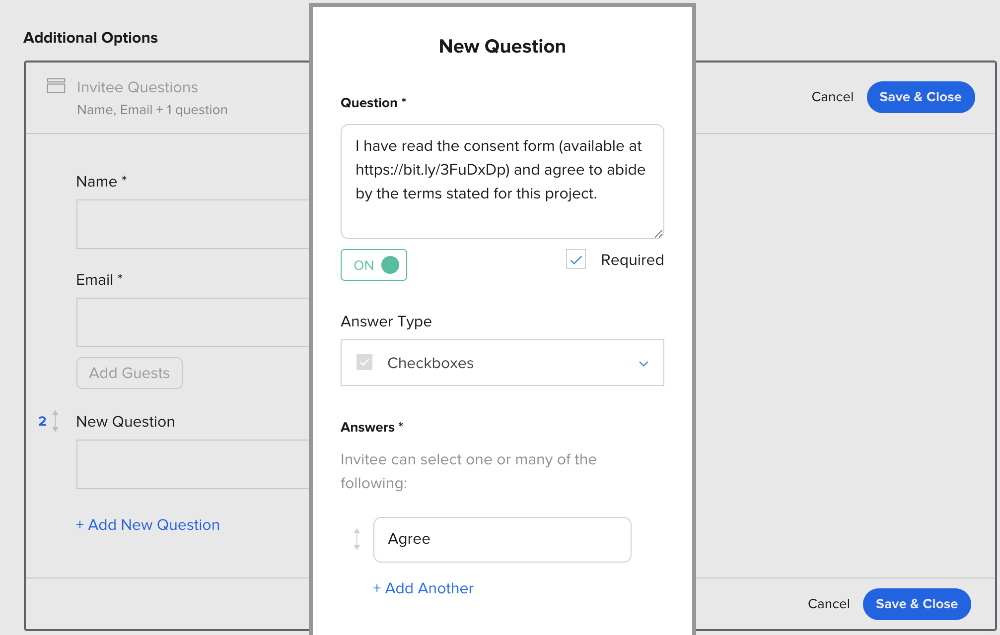

Automating consent
To comply with GDPR requirements you need to make sure that every participant has given consent before participating in research.
TIP: If you don't yet have a document for this purpose, you can start with the awesome Consent Form Builder created by the ResearchOps Community
Using an Invitee Question in Calendly
This is a barebones and straightforward approach consisting of only three steps:
- Upload your consent form to a publicly accessible link. A public PDF in google drive will do.
- Create a shortened link to the form. This improves readability and gets around the character limit for Calendly questions. You can use a link shortener service like bit.ly.
- Set up a custom question in Calendly using the link to your form. Make sure the question is required.

Using a research governance platform
If you need more sophisticated research governance features Consentkit is a good alternative. Watch this tutorial to get started:

In this setup, you have to manually send out the consent form from Consentkit to every participant that signs up for a session. It's a bit of work to keep everything in sync.